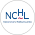

<section class="why-section">
  <div class="why-container">

    <!-- Left Column -->
    <div class="why-left">

      <!-- Heading -->
      <h2 class="why-heading">Why Dr. David Schreiner?</h2>

      <!-- Bullet Points -->
      <ul class="why-list">
        <li class="why-list-item">
          <span class="why-bullet">&#8226;</span>
          <p><strong>Proven Executive Leadership</strong> – Former President and CEO of a $500M organization with over 1,000 employees.</p>
        </li>
        <li class="why-list-item">
          <span class="why-bullet">&#8226;</span>
          <p><strong>Values-Driven Expertise</strong> – Doctorate in Values-Driven Leadership guiding people-focused and results-oriented strategies.</p>
        </li>
        <li class="why-list-item">
          <span class="why-bullet">&#8226;</span>
          <p><strong>Appreciative Inquiry Practitioner</strong> – Solves complex organizational challenges by focusing on strengths, optimism, and possibilities.</p>
        </li>
        <li class="why-list-item">
          <span class="why-bullet">&#8226;</span>
          <p><strong>Deep Understanding of Human Interaction</strong> – Skilled in connecting across roles, disciplines, and backgrounds to build engagement and alignment.</p>
        </li>
      </ul>

      <!-- CTA Buttons -->
      <div class="why-actions">
        <a routerLink="/speaking-to" class="btn-outline">Speaking</a>
        <a routerLink="/book" class="btn-filled">Dr. Schreiner's Book</a>
      </div>

      <!-- Testimonial Box -->
      <div class="why-testimonial">
  <p class="why-testimonial-text">
    On behalf of our entire team, I simply want to say THANK YOU for joining us. Your words spoke
    volumes to so many in the room, myself included. Your energy is contagious and you should be
    so proud of all that you are a part of.
  </p>
  <footer class="why-testimonial-source">
    
    <div class="testimonial-source-info">
      <strong class="testimonial-source-name">National Center for Healthcare Leadership (NCHL)</strong>
      <span class="testimonial-source-title">Organizational Leadership & Excellence Conference</span>
    </div>
  </footer>
</div>

    </div>

    <!-- Right Column - Book Image -->
    <div class="why-right">
      
    </div>

  </div>
</section>